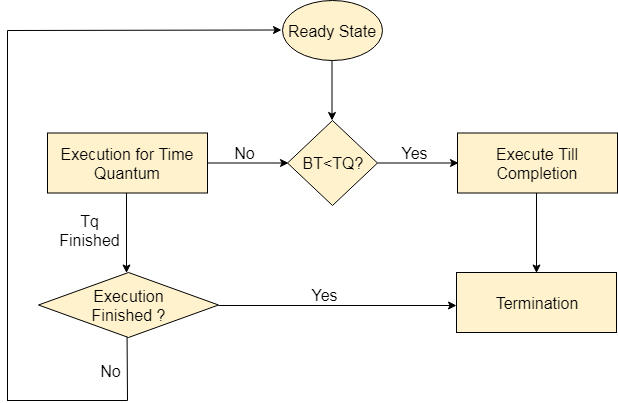

| Process | Arrival Time | Execute Time | Service Time |
|---|---|---|---|
| P0 | 0 | - | |
| P1 | 1 | - |
Quantum:
Timer: sec
The full form of FCFS Scheduling is First Come First Serve Scheduling. FCFS Scheduling algorithm automatically executes the queued processes and requests in the order of their arrival. It allocates the job that first arrived in the queue to the CPU, then allocates the second one, and so on. FCFS is the simplest and easiest CPU scheduling algorithm, managed with a FIFO queue. FIFO stands for First In First Out. The FCFS scheduling algorithm places the arriving processes/jobs at the very end of the queue. So, the processes that request the CPU first get the allocation from the CPU first. As any process enters the FIFO queue, its Process Control Block (PCB) gets linked with the queue’s tail. As the CPU becomes free, the process at the very beginning gets assigned to it. Even if the CPU starts working on a longer job, many shorter ones have to wait after it. The FCFS scheduling algorithm works in most of the batches of operating systems.
Till now, we were scheduling the processes according to their arrival time (in FCFS scheduling). However, SJF scheduling algorithm, schedules the processes according to their burst time. In SJF scheduling, the process with the lowest burst time, among the list of available processes in the ready queue, is going to be scheduled next. However, it is very difficult to predict the burst time needed for a process hence this algorithm is very difficult to implement in the system.
Round Robin scheduling algorithm is one of the most popular scheduling algorithm which can actually be implemented in most of the operating systems. This is the preemptive version of first come first serve scheduling. The Algorithm focuses on Time Sharing. In this algorithm, every process gets executed in a cyclic way. A certain time slice is defined in the system which is called time quantum. Each process present in the ready queue is assigned the CPU for that time quantum, if the execution of the process is completed during that time then the process will terminate else the process will go back to the ready queue and waits for the next turn to complete the execution.
